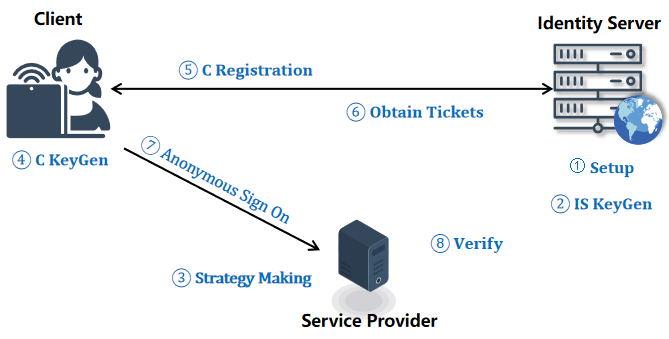
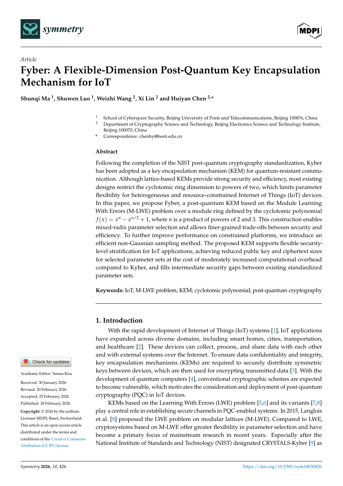

👋 About me
I am a Ph.D. candidate in Cyberspace Security at the School of Cyberspace Security, Beijing University of Posts and Telecommunications (BUPT), supervised by Prof. Huiyan Chen. I am currently a CSC-funded visiting Ph.D. student at the School of Physical and Mathematical Sciences, Nanyang Technological University (NTU), advised by Prof. Huaxiong Wang.
🔐 My research interests include post-quantum cryptography, lattice-based cryptography, privacy-preserving authentication.
🤝 I am interested in research collaborations on lattice-based cryptography and privacy-enhancing technologies. Please feel free to contact me by email.
📰 News
- 09/2026: 🎉 Our paper NTRU-CLAPS was published in the Journal of Systems Architecture.
- 07/2026: 🎉 Our paper LAASSO was published in the Journal of Information Security and Applications.
- 02/2026: 🎉 Our paper Fyber was published in Symmetry.
- 09/2025: Started a CSC-funded joint Ph.D. program at Nanyang Technological University.
📚 Selected Publications

* Corresponding author.
🔬 Research Projects
Research on Fundamental Mathematical Problems in Lattice-Based Cryptography
Project LeadCompleted
Program: Second Student Innovation Funding Program for Cybersecurity Schools
Funding Institutions: Cyber Security Association of China and Ant Group
Period: April 30, 2024 - April 30, 2027 · Funding: CNY 60,000
Design of Lattice-Based Cryptographic Algorithms Based on the M-LWE Problem
Project LeadOngoing
Program: BUPT Doctoral Innovation Funding Program
Funding Institution: Beijing University of Posts and Telecommunications
Period: April 30, 2024 - April 30, 2027 · Funding: CNY 16,600
National High-Level University Joint Ph.D. Scholarship Program
Project LeadCompleted
Funding Institution: China Scholarship Council (CSC)
Host Institution: Nanyang Technological University (NTU), Singapore · Host Supervisor: Prof. Huaxiong Wang
Period: August 31, 2025 - August 30, 2026 · Funding: CNY 140,000
🎓 Education
- Beijing University of Posts and Telecommunications - Ph.D. candidate in Cyberspace Security, 2023-2027. Advisor: Prof. Huiyan Chen.
- Nanyang Technological University - CSC-funded joint Ph.D. student, 2025-2026. Advisor: Prof. Huaxiong Wang.
- Qingdao University - M.Sc. in Fundamental Mathematics (Number Theory), 2020-2023. Advisor: Prof. Kui Liu.
- Xinzhou Teachers University - B.Sc. in Mathematics and Applied Mathematics, 2016-2020.
🏆 Honors and Awards
- China Scholarship Council Scholarship for Joint Ph.D. Training, 2025.
- Ph.D. Academic Scholarship, Beijing University of Posts and Telecommunications, 2023-2026.
- President's Scholarship, Qingdao University, 2022.
- First-class Graduate Academic Scholarship, Qingdao University, 2021 and 2022.
- National Scholarship for Undergraduate Students, 2018.